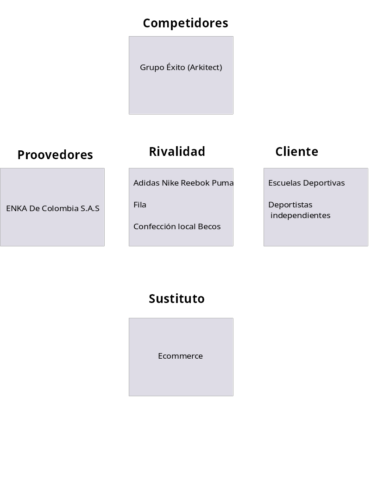

Becos
Table of Contents
1 Análisis del entorno
1.1 PESTEL
1.1.1 Político
- Amenaza de variante delta
Con la aparición de la variante delta, la comunidad internacional está considerando volver a implementar medidas de aislamiento.
Esto es una amenaza porque la infraestructura física requiere un plantel de trabajadores para sus procesos de confección, que está ligado a la mano de obra de las trabajadoras. Habra más costos para garantizar la salubridad y hay límites de espacio que se deben respetar, lo que disminuye capacidad de producción
- Cese de presencialidad en los colegios
Si se prolonga el aislamiento social, por un posible cuarto pico, la proyección de ventas se desploma, puesto que prinipalmente recae en escuelas de futbol y colegios de Bogotá, que participan en torneos locales.
Esto es una amenaza porque no habrá demanda de uniformes.
- Déficit fiscal y tributación de la reforma 2.0:
En la nueva reforma fiscal la tarifa de renta subirá del 30 al 35% para hacerle frente al déficit fiscal que enfrenta el país.
Esto es una amenaza porque los márgenes de rentabilidad será más estrecho. Más aun, teniendo en cuenta el costo competitivo que el plan de negocios plantea para sus productos.
1.1.2 Económico
1.1.3 Social
- Protagonismo del sector textil colombiano a nivel internacional
El sector textil y la moda registra el 37% de las empresas registrados en CCB. Según Colombia productiva, el sector textil y de confección es el primer generador de mano de obra en la industria nacional. Además, colombia es el primer exportador de tejido plano en Suramérica.
Esto es una oportunidad porque el reconocimiento externo de la moda colombiana podría potenciar aún más la propuesta diferenciadora de Becos: ayudar a madres cabezas de hogar de sectores vulnerables a la vez que se contrinuye al medio ambiente.
- Necesidad de impulsar la reactivación económica
El Gobierno Duque enfatiza que el pais muestra ritmo de crecimiento elevado (1,1%) el primer trimestre del año, en comparación con paises como Chile o México. El gobierno pronostica un desarrollo favorable durante el resto del año.
Esto es una oportunidad porque parece improbable que el gobierno actual paralice la reactivación ecónomica, más aún si se se han hecho esfuerzos presupuestales para iniciar le proceso de vacunación.
1.1.4 Tecnológico
1.1.5 Ambiental
- Aceptación cultural del reciclaje
El mundo está entrando en periodo de conciencia ambiental. En Colombia, sectores como el de los hidrocarburos están iniciado una transformación hacia energías más limpias.
Esto es una oportunidad, puesto que hay una tendencia cultural por participar en la genereción de un mundo ecosostenible, lo que hace que la propuesta de Becos altamente atractiva en el pais y el mundo por igual.
1.1.6 Legal
1.2 5 Fuerzas

1.3 BMM
1.3.1 Assesment
1.3.2 Medios
- Integracion
- Apuntar a mercado internacional
- Formar alianzas intenrnacionales y locales
- Intensivas
- aumentar precios de productos para mercado internacional
- fortalecer la linea de producto personalizado
- mayor valor agregado al proceso de confección
- Diversificación
- Aumentar catálogo de producto a mayores actividades
- Ventas online
- Defensivas
- Recortar sueldos
- Optimizara costos operacionales
- Solicitar subsidios y exenciones
- Usar ERP y CRM con licencias GPL